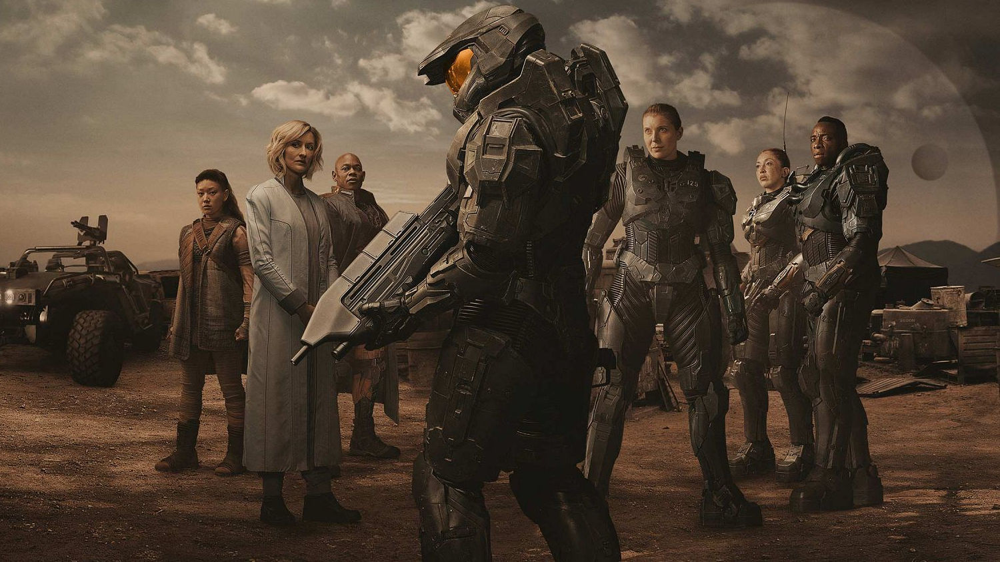

Halo Série
Master Chief, um super-soldado ciberneticamente modificado, defende a humanidade contra o Covenant, uma aliança de alienígenas fanáticos, no século 26.
Halo Infinite
É um jogo eletrônico de tiro em primeira pessoa desenvolvido pela 343 Industries e publicado pela Xbox Game Studios. Foi lançado em 8 de dezembro de 2021 para Microsoft Windows, Xbox One e Xbox Series X/S.